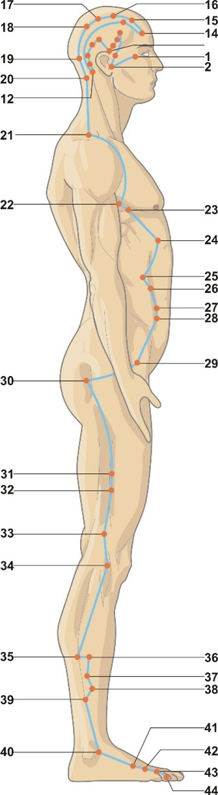

Fereastra hotărârii și a viselor creative
Vezica biliară atinge potențialul maxim între 23:00 – 01:00, momentul în care energia Yang începe să renască. Este fereastra optimă pentru somn profund și pentru procesarea viselor. Trezirile frecvente între 23-01 sau insomniile de la această oră indică un dezechilibru al Lemnului (stagnare de Qi sau căldură în vezica biliară).
Energie, ore & elemente asociate
☯Tip energetic
- Yang minor — Zu Shaoyang (足少阳): Meridianul „mai micului Yang” al piciorului. Este poarta de trecere între exterior (taiyang) și interior (yangming) – un pivot energetic esențial.
- Meridian pereche: Ficatul (Zu Jueyin 足厥阴). Cuplul Lemn: vezica biliară Yang (decizie, acțiune), ficatul Yin (planificare, stocarea sângelui).
- Spirit: Curajul („da dan” – fiere mare) și hotărârea. Un GB armonios conferă capacitatea de a lua decizii ferme, de a acționa cu curaj și de a avea inițiativă.
- Organ de simț asociat: Ochii (vederea clară, percepția corectă a realității).
🍃Element Lemn (木) — Creșterea și flexibilitatea
- Direcție: Est | Anotimp: Primăvara
- Climat: Vântul | Culoare: Verde
- Gust: Acru | Sunet: Strigătul
- Emoție: Mânia, frustrarea, decizionalitatea (în dezechilibru); blândețea, flexibilitatea, curajul (în echilibru)
- Țesuturi: Tendoanele, ligamentele, mușchii (prin legătura cu Ficatul)
- Funcții speciale: Vezica biliară stochează și secretă bila, ajută la digestia grăsimilor, influențează calitatea somnului și capacitatea de a visa.
🕐Ceasul organic — 24 h
- Înainte — Triplu Încălzitor (SJ): 21:00–23:00. Reglarea metabolismului și pregătirea pentru somn.
- Vezica Biliară (GB): 23:00–01:00. Fereastra deciziei și a viselor. Somnul profund din această perioadă este esențial pentru regenerarea psihică și detoxifiere.
- După — Ficatul (LR): 01:00–03:00. Stocarea sângelui și curățarea emoțională.
- Semnificație clinică: Trezirea între 23-01 = stagnare de Qi în vezica biliară sau căldură. Visuri agitate, coșmaruri = dezechilibru al bilei. Durerea în hipocondru sau migrena care se agravează noaptea = blocaj GB.
GB
LV
LU
LI
胃
脾
HT
SI
BL
KD
心包
SJ
Traseu & anatomie energetică

0.5 cun lateral de canthusul extern, în depresiunea de la marginea laterală a orbitei.
Traversează regiunea temporală, spatele urechii și procesul mastoid.
Urcă pe vertex, coboară pe frunte, trece prin ceafă. GB-20 este punctul suprem pentru eliminarea vântului.
Coboară pe umăr, apoi pe linia laterală a toracelui și abdomenului (GB-22 Yuanye → GB-23 Zhejin → GB-24 Riyue → GB-25 Jingmen → GB-26 Daimai → GB-27 Wushu → GB-28 Weidao).
Punctul GB-30 este cheia pentru sciatică și durerea de șold. De aici coboară pe partea laterală a coapsei.
GB-34 este punctul He-Mare și punctul de influență al tendoanelor, esențial pentru mobilitate.
Traversează fața laterală a gambei, trece în spatele maleolei externe și ajunge la GB-40 (Yuan-Sursă).
Se termină la partea laterală a celui de-al patrulea deget. GB-41 este punctul cheie al vasului Daimai (centură).
🔗Conexiuni interne profunde
- Legătura cu creierul și măduva: GB-39 (Xuanzhong) este punctul de influență al măduvei. Meridianul GB hrănește creierul și măduva spinării, influențând echilibrul și coordonarea.
- Conexiunea cu ficatul: Prin Luo-ul GB-37 (Guangming) se conectează direct cu meridianul ficatului. Relația GB-Ficat este fundamentală pentru digestia grăsimilor și reglarea emoțională.
- Vasul centurii (Daimai): GB-26 (Daimai) este punctul de întâlnire cu vasul centurii, care încinge corpul ca o curea. Reglează abdomenul inferior și membrele.
- Yang Wei Mai: GB-20 (Fengchi), GB-21 (Jianjing), GB-35 (Yangjiao) sunt puncte de întâlnire cu Yang Wei Mai, care protejează suprafața corpului.
Rol: „Curtea de justiție” — funcții fiziologice
🧴Stocarea și secreția bilei
Vezica biliară stochează bila secretată de ficat și o eliberează în intestinul subțire pentru digestia grăsimilor. Un GB armonios asigură digestia corectă a grăsimilor, prevenind balonarea, gustul amar și grețurile.
⚖️Capacitatea decizională & curajul
În MTC, vezica biliară este asociată cu capacitatea de a lua decizii ferme și de a acționa cu curaj. Un dezechilibru duce la indecizie, anxietate, lipsa inițiativei și frica de a face alegeri greșite.
🦵Influența asupra tendoanelor și articulațiilor
Prin legătura cu ficatul, GB hrănește tendoanele și ligamentele. Punctele sale de-a lungul lateralului corpului sunt esențiale pentru mobilitatea șoldului, genunchiului și gleznei.
🌬️Eliminarea vântului și a căldurii
GB-20 (Fengchi) este principalul punct pentru eliminarea vântului extern (răceli, migrene, rigiditate cervicală). De asemenea, elimină căldura din cap și ochi.
😴Reglarea somnului și viselor
Vezica biliară guvernează calitatea somnului profund din prima parte a nopții. Un GB armonios permite vise clare și odihnitoare; dezechilibrul produce coșmaruri, treziri frecvente sau insomnie la începutul nopții.
👁️Deschiderea în ochi
GB-1, GB-14, GB-37 tratează afecțiunile oculare: conjunctivită, durere oculară, vedere încețoșată, orbire de noapte.
Blocaje & indicații terapeutice
⚠️Tipare patologice principale
- Stagnare de Qi a vezicii biliare (hipofuncție): Indecizie, lipsă de curaj, oftează frecvent, sensibilitate la vânt și frig, gust amar dimineața, tensiune în umeri, durere în hipocondru, scaune grase, constipație alternând cu diaree, sindrom premenstrual.
- Căldură umedă în vezica biliară (exces): Gust amar persistent, icter (ochi galbeni), urină închisă, durere în hipocondru, grețuri, vărsături, colecistită acută, pietre biliare, limbă cu depunere galbenă groasă.
- Deficiență de Qi a vezicii biliare: Indecizie cronică, teamă de a lua decizii, anxietate generalizată, insomnie de început de noapte, vise fragmentate, oboseală cronică, senzație de cădere sau lipsă de susținere.
- Manifestări pe traiect: Durere în colțul extern al ochiului, migrenă temporală, durere în spatele urechii, rigiditate cervicală, durere pe linia laterală a trunchiului, durere de șold și de-a lungul coapsei externe, durere la nivelul degetului 4.
🏥Indicații terapeutice generale
- Hepatobiliare și digestive: Colecistită, litiază biliară, icter, dispepsie grăsime, gust amar, grețuri, vărsături, constipație alternantă.
- Musculo-scheletice: Sciatică, durere de șold (coxartroză), durere laterală a coapsei, genunchi (lateral), gleznă, torticolis, periartrită umăr.
- Neurologice și psihice: Migrenă temporală, cefalee occipitală, vertij, nevralgie trigemen, epilepsie, insomnie de început de noapte, anxietate, indecizie patologică, depresie.
- ORL și oftalmologice: Tinitus, surditate, otalgie, congestie oculară, durere oculară, orbire de noapte, sinuzită.
- Ginecologice: Dismenoree, sindrom premenstrual (iritabilitate, sâini dureroși), leucoree, infertilitate (prin legătura cu Daimai).
- Dermatologice: Urticarie, eczeme, herpes zoster (pe traiectul GB).
Vezica biliară — sediul curajului și al hotărârii
Vezica biliară este numită „curtea de justiție” deoarece ne dă capacitatea de a judeca corect situațiile și de a lua decizii ferme. Un GB armonios oferă curaj, inițiativă și încredere în propriile alegeri. În dezechilibru, apar indecizia cronică, frica de a greși, lipsa de asertivitate și tendința de a amâna deciziile importante. Prin legătura cu Ficatul, GB influențează și gestionarea furiei și frustrării.
Atribute psiho-emoționale ale Vezicii Biliare
✅Atribute pozitive — GB în armonie
- Curaj, hotărâre, inițiativă
- Capacitatea de a lua decizii ferme și de a acționa
- Încredere în propriile alegeri
- Asertivitate, capacitate de a spune „nu” când este cazul
- Visuri clare, odihnitoare, somn profund în prima parte a nopții
- Flexibilitate mentală, adaptabilitate la schimbări
⚠️Atribute negative — GB dezechilibrat
- Indecizie cronică, amânarea deciziilor, frica de a greși
- Lipsă de curaj, timiditate, tendința de a se lăsa influențat de alții
- Frustrare reprimată, mânie pasivă, resentimente
- Incapacitatea de a stabili limite sănătoase
- Coșmaruri, treziri nocturne între 23-01, insomnie de început de noapte
- Gust amar persistent dimineața („fiere” amară)
Manifestări psihice în funcție de tipul energetic
↓Deficiență de Qi (lipsă de curaj, indecizie)
Indecizie paralizantă, amânarea cronică a deciziilor importante. Persoana se simte copleșită de alegeri, cere constant sfaturi, se teme să greșească. Lipsă de asertivitate, nu poate spune „nu”. Anxietate socială, timiditate. Vise cu căderi, labirinturi sau lipsa unui traseu clar. Oftează frecvent pentru a elibera tensiunea din piept.
↑Exces de Qi / căldură (frustrare, mânie)
Frustrare cronică, mânie reprimată care explodează periodic. Persoana este iritabilă, critică, ușor de enervat. Gust amar persistent, senzație de „fiere” în gură. Tinde să fie dominatoare, dar incapabilă să-și gestioneze propria furie. Coșmaruri agitate, treziri violente. În cazuri severe: comportament pasiv-agresiv sau explozii de furie incontrolabile.
Dinamica arhetipală: Vezica Biliară & relația cu părinții
👪Relația cu autoritatea și curajul de a fi independent
- Armonie: Capacitatea de a lua decizii proprii fără a depinde excesiv de aprobare. Relație sănătoasă cu autoritatea (părinți, șefi) – respect fără supunere oarbă. Curajul de a-și urma propriul drum.
- Dezechilibru ușor: Nevoia de validare constantă din partea părinților sau a partenerului. Tendința de a cere sfaturi pentru orice decizie, chiar și banală.
- Dezechilibru moderat: Conflict interior între a face pe plac părinților și a urma propriile dorințe. Sentimentul că nu ai voie să ieșești din tipar. Incapacitatea de a spune „nu” părinților chiar și la vârsta adultă.
- Dezechilibru sever: Traumă legată de deciziile forțate în copilărie (părinți autoritari care nu permiteau exprimarea propriei voințe). Frica paralizantă de a lua decizii singur, senzația că orice alegere este greșită. Sau, dimpotrivă, rebeliune extremă și respingerea oricărei forme de autoritate, inclusiv a propriei conștiințe.
Instrument de evaluare a meridianului Vezicii Biliare
Glisați pe bara colorată sau utilizați meniul dropdown pentru a selecta starea energetică. Profilul complet — fiziologic, nutrițional, emoțional și terapeutic — se afișează imediat. Corelați cu măsurătorile de biorezonanță și cu istoricul de indecizie, frustrare, migrene și probleme digestive.
Evaluare energetică — Meridian Vezica Biliară (GB)
Selectați nivelul observat: glisați pe bară, trageți indicatorul sau utilizați meniul.
Meridianul Vezicii Biliare (Zu Shaoyang) — 44 puncte GB (tabel complet)
Tabel complet cu localizare de precizie, categorii energetice, funcții principale și indicații terapeutice detaliate pentru toate punctele meridianului.
| Punct | Localizare | Categorie | Funcții principale | Indicații detaliate |
|---|---|---|---|---|
| GB 1 Tongziliao 瞳子髎 | În afara unghiului lateral al ochiului, 0.5 cun lateral de canthusul extern, în depresiunea de la marginea laterală a orbitei. | Punct de întâlnire (GB, Vez. Ur., Yang Wei, Yang Qiao) |
| Conjunctivită, fotofobie, lăcrimare, cataractă incipientă, glaucom, cefalee temporală, migrenă oftalmică. |
| GB 2 Tinghui 听会 | Anterior de ureche, în depresiunea dintre marginea inferioară a arcului zigomatic și incizura mandibulară (cu gura deschisă). | Punct local ureche |
| Tinitus, hipoacuzie, otită medie supurată, nevralgie trigemen, dislocare mandibulară, bruxism, durere de dinți molar. |
| GB 3 Shangguan 上关 | Anterior de ureche, direct deasupra punctului Xiaguan (ST7), în depresiunea marginii superioare a arcului zigomatic. | Punct de întâlnire (GB şi Stomac) |
| Nevralgie trigemen, paralizie facială periferică, tinitus, surditate, otalgie, durere de dinți superiori, tic facial. |
| GB 4 Hanyan 颔厌 | În regiunea temporală, la joncțiunea dintre sfertul superior și cele trei sferturi inferioare ale liniei care unește Touwei (ST8) și Qubin (GB7). | Punct local migrenă |
| Migrenă, cefalee temporală, durere de dinți maxilar, otalgie, vertij, nevralgie occipitală. |
| GB 5 Xuanlu 悬颅 | La mijlocul liniei dintre Touwei (ST8) şi Qubin (GB7) în regiunea temporală (în păr). | Punct local |
| Cefalee temporală, eritem facial (rosacee), durere în colțul extern al ochiului, durere de dinți superiori, tinitus. |
| GB 6 Xuanli 悬厘 | În părul temporal, la ¾ superior de linia dintre Touwei (ST8) şi Qubin (GB7). | Punct local durere de cap |
| Migrenă, nevralgie trigemen, durere de dinți superiori, edem facial, tinitus, congestie oculară. |
| GB 7 Qubin 曲鬓 | La intersecția dintre linia verticală de-a lungul marginii posterioare a părului temporal și linia orizontală la vârful urechii. | Punct de întâlnire GB şi Vez. Urinară |
| Cefalee, trismus, paralizie facială, otalgie, tinitus, vărsături, durere de dinți, rigiditate cervicală. |
| GB 8 Shuaigu 率谷 | 1.5 cun deasupra liniei de păr de deasupra vârfului urechii, direct deasupra punctului Jiaosun (SJ20). | Punct de întâlnire GB, Stomac şi Yang Wei |
| Vertij, migrenă, cefalee, convulsii la copii, vomă, insomnie, tulburări de echilibru. |
| GB 9 Tianchong 天冲 | Chiar deasupra marginii posterioare a rădăcinii urechii, 2 cun deasupra liniei părului, 0.5 cun posterior de GB8. | Punct de intersecţie cu Vez. Ur. |
| Cefalee, gingivită, tumefacţie a gingiei, epilepsie, anxietate, guşă, tinitus. |
| GB 10 Fubai 浮白 | Postero-superior de apofiza mastoidă, la treimea superioară a liniei dintre GB9 (Tianchong) şi GB12 (Wangu). | Punct local |
| Torticolis, cefalee occipitală, tinitus, surditate, limfadenită cervicală (scrofuloză), durere în umăr şi braț. |
| GB 11 Touqiaoyin 头窍阴 | Postero-superior de apofiza mastoidă, la treimea inferioară a liniei dintre GB9 (Tianchong) şi GB12 (Wangu). | Punct de întâlnire cu Vez. Ur. |
| Cefalee, vertij, rigiditate cervicală, tinitus, surditate, durere în piept şi hipocondru, gust amar. |
| GB 12 Wangu 完骨 | În depresiunea postero-inferioară a procesului mastoidian, în spatele urechii. | Punct de întâlnire (GB, Vez. Ur., Yang Wei) |
| Paralizie facială, cefalee occipitală, torticolis, faringită, carie dentară, otalgie, epilepsie, accese febrile intermitente (malarie). |
| GB 13 Benshen 本神 | 0.5 cun deasupra liniei anterioare de păr, 3 cun lateral de linia mediană anterioară, pe linia dintre Shenting (DU24) şi Touwei (ST8). | Punct de întâlnire cu Yang Wei Mai |
| Epilepsie, cefalee severă, vertij, convulsii infantile, hemiplegie, durere în piept şi hipocondru. |
| GB 14 Yangbai 阳白 | 1 cun deasupra punctului mijlociu al sprâncenei, pe linia pupilară, direct superior de BL2 (Cuanzhu). | Punct de întâlnire Yang Wei şi Vez. Ur. |
| Blefarospasm, paralizie facială, cefalee frontală, durere oculară, orbire de noapte, vertij. |
| GB 15 Toulinqi 头临泣 | 0.5 cun deasupra liniei anterioare de păr, în dreptul pupilei, la jumătatea liniei dintre Shenting (DU24) şi Touwei (ST8). | Punct de întâlnire Yang Wei şi Vez. Ur. |
| Congestie nazală, sinuzită frontală, cefalee, durere oculară, lacrimare, surditate, convulsii infantile. |
| GB 16 Muchuang 目窗 | 1.5 cun deasupra liniei anterioare de păr, 2.25 cun lateral de linia mediană, 1 cun posterior de GB15. | Punct local ochi |
| Durere oculară, hipermetropie, miopie, cataractă, eritem facial, durere de dinți superiori, vertij. |
| GB 17 Zhengying 正营 | 2.5 cun deasupra liniei anterioare de păr, 2.25 cun lateral de mediană, 2 cun posterior de GB15. | Punct de reglare a limbii şi buzelor |
| Cefalee, vertij, rigiditatea buzelor, durere de dinți incisivi, trismus, nevralgie facială. |
| GB 18 Chengling 承灵 | 4 cun deasupra liniei anterioare de păr, 2.25 cun lateral de linia mediană, 1.5 cun posterior de GB17. | Punct local |
| Rinită, sinuzită, epistaxis, congestie nazală, cefalee occipitală, vertij, durere oculară. |
| GB 19 Naokong 脑空 | Lateral de marginea superioară a protuberanţei occipitale externe, 2.25 cun lateral de linia mediană, la același nivel cu DU17 (Naohu). | Punct de întâlnire cu Yang Wei |
| Cefalee occipitală, rigiditate cervicală, vertij, durere oculară, sinuzită, surditate, epilepsie, anxietate nocturnă. |
| GB 20 Fengchi 风池 | La ceafă, inferior de osul occipital, în depresiunea dintre muşchiul sternocleidomastoidian şi trapez, la nivelul DU16 (Fengfu). | Punct cheie Yang Wei Mai, elimină vântul extern |
| Hipertensiune arterială, migrenă, vertij, răceală comună, rigiditate cervicală, congestie oculară, sinuzită, surditate, paralizie facială, malarie, acufene. |
| GB 21 Jianjing 肩井 | La mijlocul liniei dintre DU14 (Dazhui) şi punctul acromionului (lateral de mușchiul trapez), pe vârful umărului. | Punct de întâlnire (GB, Vez. Ur., Yang Wei, San Jiao), contraindicat în sarcină |
| Sindromul umărului înţepenit, torticolis, cefalee tensională, mastită, hipogalactie, distocie (contraindicație la gravide), pareză braț. |
| GB 22 Yuanye 渊腋 | Pe linia mediană a axilei, în al 4-lea spațiu intercostal (la nivelul mamelonului), 3 cun sub axilă. | Punct local toracic |
| Nevralgie intercostală, distensie toracică, durere în hipocondru, limfadenită axilară, durere braț. |
| GB 23 Zhejin 辄筋 | 1 cun anterior de GB22 (Yuanye), în al 4-lea spațiu intercostal, la același nivel cu mamelonul. | Punct de reglare a respirației |
| Reflux gastroesofagian, eructaţii, vomă, dureri în hipocondru, tuse astmatiformă, durere axilară. |
| GB 24 Riyue 日月 | În al 7-lea spațiu intercostal, 4 cun lateral de linia mediană anterioară (la nivelul procesului xifoid). | Mu-frontal al Vezicii Biliare |
| Colecistită, litiază biliară, icter, durere în hipocondru, regurgitare amară, vărsături, sughiț, gastrită. |
| GB 25 Jingmen 京门 | Pe marginea liberă a coastei a 12-a, 1.8 cun posterior de punctul Zhangmen (LR13). | Mu-frontal al Rinichiului |
| Lombalgie, diaree cronică, distensie abdominală, borborisme, nefrită cronică, dureri în flanc. |
| GB 26 Daimai 带脉 | Direct sub capătul coastei a 11-a, pe linia verticală de la GB25, la nivelul ombilicului (1.8 cun sub Zhangmen). | Punct de întâlnire cu vasul Daimai |
| Leucoree, hernie, durere în talie, menstruaţie neregulată, prolaps uterin, sindromul centurii pelvine. |
| GB 27 Wushu 五枢 | Anterior de spina iliacă antero-superioară (SIAS), 3 cun inferior de ombilic, pe linia orizontală. | Punct ginecologic |
| Prolaps uterin, leucoree abundentă, hernie inghinală, constipație, dureri în abdomen inferior. |
| GB 28 Weidao 维道 | Ante-inferior de spina iliacă antero-superioară, 0.5 cun anterior inferior de GB27. | Punct local |
| Metroragie, leucoree, infertilitate, durere inghinală, hernie, edeme ale membrelor inferioare. |
| GB 29 Juliao 居髎 | La mijlocul distanței dintre spina iliacă antero-superioară și trohanterul mare (proeminența femurului). | Punct de întâlnire cu Yang Wei |
| Coxartroză, durere de şold, sciatică, atrofie musculară a membrului inferior, paralizie. |
| GB 30 Huantiao 环跳 | În poziție laterală cu coapsa flexată, la 1/3 laterală a liniei dintre trohanterul mare şi hiatusul sacral (DU2). | Punct major pentru membrul inferior |
| Sciatică severă, hemiplegie, durere lombară, atrofie musculară, urticarie cronică, polinevrite. |
| GB 31 Fengshi 风市 | Pe linia mediană a coapsei laterale, 7 cun deasupra pliului popliteu (la capătul degetelor cu mâna lipită de coapsă). | Punct specific vânt |
| Prurit cutanat, eczeme, urticarie, nevralgii femurale, hemiplegie, parestezii membre inferioare. |
| GB 32 Zhongdu 中渎 | 2 cun sub GB31 (Fengshi) pe linia laterală a coapsei, sau 5 cun deasupra pliului popliteu, între muşchiul vast lateral şi biceps femural. | Punct de reglare a meridianului muscular |
| Paralizia membrului inferior, nevralgie femurală, durere de genunchi, sciatică, slăbiciune musculară. |
| GB 33 Xiyangguan 膝阳关 | 3 cun deasupra GB34 (Yanglingquan), în depresiunea de deasupra epicondilului lateral al femurului, cu genunchiul flexat. | Punct local genunchi |
| Gonartroză, sinovită, durere a epicondilului lateral femural, paralizie extensori, crampe musculare. |
| GB 34 Yanglingquan 阳陵泉 | În depresiunea antero-inferioară capului mic al fibulei, la nivelul articulației genunchiului. | He-Mare (Punct de pământ), punct de influenţă a tendoanelor |
| Hemiplegie, durere genunchi, nevralgie intercostală, colecistită, icter, gust amar, convulsii infantile, tetanos. |
| GB 35 Yangjiao 阳交 | 7 cun deasupra vârfului maleolei laterale, pe marginea posterioară a fibulei. | Punct de întâlnire cu Yang Wei Mai |
| Durere în piept şi hipocondru, manie, convulsii, durere la genunchi şi coapsă, paralizie membrului inferior. |
| GB 36 Waiqiu 外丘 | 7 cun deasupra maleolei laterale, pe marginea anterioară a fibulei, la același nivel cu GB35. | Punct de reglare a gâtului şi toracelui |
| Torticolis, durere cervicală, durere toracică, demenţă, piept de porumbel la copii, parestezii membre inferioare. |
| GB 37 Guangming 光明 | 5 cun deasupra maleolei laterale, pe marginea anterioară a fibulei. | Luo al Vezicii Biliare (conectează cu Ficatul) |
| Orbire nocturnă (hemeralopie), cataractă, glaucom, durere oculară, congestie, durere la sâni, durere de genunchi. |
| GB 38 Yangfu 阳辅 | 4 cun deasupra maleolei laterale, ușor anterior de marginea anterioară a fibulei. | Jing-Râu (Punct de foc) |
| Migrenă, durere în colțul extern al ochiului, durere claviculară, limfadenită, malarie, hemiplegie. |
| GB 39 Xuanzhong 悬钟 | 3 cun deasupra maleolei laterale, pe marginea anterioară a fibulei (la nivelul articulaţiei gleznei). | Punct de influenţă a măduvei, întâlnire cu Yang Wei |
| Hemiplegie, atrofie a membrelor inferioare, durere de gleznă, sciatică, distensie toracică, dermatomicoză. |
| GB 40 Qiuxu 丘墟 | Antero-inferior de maleola laterală, în depresiunea laterală a tendonului extensor lung al halucelui. | Yuan-Sursă a Vezicii Biliare |
| Malarie, colecistită, durere în hipocondru, sciatică, hemiplegie, durere şi umflătură a gleznei, hernie. |
| GB 41 Zulinqi 足临泣 | În depresiunea distală de articulația metatarsofalangeală a 4-lea deget, între oasele metatarsiene IV şi V. | Shu-Abrupt (Punct de lemn), punct cheie Dai Mai |
| Migrenă, durere în hipocondru, mastită, malarie, hemiplegie, crampe ale piciorului, durere de călcâi, leucoree. |
| GB 42 Diwuhui 地五会 | Posterior de articulația metatarsofalangeală a degetului 4, între osul metatarsian 4 şi 5, pe marginea medială a tendonului extensor al degetului mic. | Punct auxiliar |
| Tinitus, surditate, congestie oculară, cefalee, mastită, durere în hipocondru, umflare axilară. |
| GB 43 Xiaxi 侠溪 | Între degetele 4 şi 5, posterior de pliul interdigital, la joncțiunea dorso-plantară. | Ying-Izvor (Punct de apă) |
| Migrenă, vertij, tinitus, surditate, durere în hipocondru, hemiplegie, malarie, durere oculară, obrajii umflați. |
| GB 44 Zuqiaoyin 足窍阴 | Pe partea laterală a celui de-al 4-lea deget, 0.1 cun distal de unghiul unghiei (colţul extern). | Jing-Puţ (Punct de metal) |
| Migrenă, durere şi tumefacţie oculară, surditate, tinitus, faringită, durere în piept şi hipocondru, coşmaruri, febră. |
Protocoale de autoterapie — Relaxarea lateralului şi curajul deciziei
Tehnicile de mai jos pot fi practicate zilnic, de preferinţă seara (înainte de 23:00) pentru a armoniza GB. Masajul punctelor de pe cap şi de pe picior este deosebit de benefic pentru reducerea migrenelor şi ameliorarea durerilor de şold.
Tehnici de acupresură & autoterapie
GB-34 Yanglingquan — punctul cheie pentru tendoane ⭐⭐
Localizați punctul în depresiunea de sub capul fibulei (partea laterală a genunchiului). Apăsaţi ferm cu policele timp de 1-2 minute. Tratează durerile de genunchi, sciatica, hemiplegia şi tendinita. Este punctul He-Mare al GB şi punctul de influenţă al tendoanelor.
GB-20 Fengchi — migrena şi rigiditatea cervicală
În depresiunea de la baza craniului, între mușchii sternocleidomastoidian și trapez. Masați ușor cu degetele mari timp de 1-2 minute. Elimină vântul, calmează migrena, vertijul, congestia oculară şi hipertensiunea. Este punctul suprem pentru afecțiunile capului cauzate de vânt.
GB-40 Qiuxu — tonifierea vezicii biliare
Antero-inferior de maleola laterală, în depresiunea laterală a tendonului extensor. Aplicați presiune fermă timp de 1-2 minute. Armonizează vezica biliară, tratează durerea în hipocondru, colecistita şi malarie. Este punctul Yuan-Sursă al GB.
Masajul lateralului trunchiului (ramura GB)
Cu pumnii sau cu o rolă de spumă, masați ușor zona laterală a trunchiului, de la sub braț până la creasta iliacă. 5-10 minute zilnic. Stimulează fluxul de Qi în GB, reduce tensiunea din hipocondru şi ameliorează durerile de şold.
Nutriţie pentru Vezica Biliară (Lemn)
Tonifiere (deficit, indecizie, frică): Alimente ușor amare și acre: păpădie (frunze), ridiche neagră, napi, hrean, lămâie, grepfrut, oțet de mere, legume cu frunze verzi. Mese regulate, evitarea grăsimilor grele. Răcorire (exces de căldură, gust amar, colecistită): castraveți, pepene galben, pere, ceai de păpădie, mentă, crizantemă. Evitați prăjelile, alcoolul, zahărul, excesul de grăsimi saturate.
Suplimente & fitoterapie GB
Suport hepatic și biliar: Silimarină (200-400 mg), ciulin de lapte, anghinare (Cynara), curcumină (500 mg), colinat de colină. Pentru digestia grăsimilor: enzime digestive cu lipază, ox bile. Pentru stres şi decizii: magneziu (300-400 mg), L-teanină, Schisandra. Pentru dureri de cap: feverfew (pyrethrum), CoQ10.
Rutina deciziei (seara)
Înainte de culcare (în jur de 22:30), așezați-vă confortabil. Respirați profund de 10 ori. Apoi, pentru fiecare decizie pe care amânați, spuneți în gând: „Am curajul să aleg. Orice decizie este mai bună decât indecizia.” Masați ușor GB-13 (Benshen) pe frunte. 5 minute, zilnic, timp de 21 de zile.
Sunetul GB — „Shaaaa” (Lemn)
Inspirați adânc. La expir, produceți un sunet prelungit „Shaaaa” (asemănător unui strigăt blând). Vizualizați o lumină verde curgând de-a lungul lateralului corpului. 9 repetări, seara. Armonizează GB şi eliberează frustrarea.
Protocol clinic — combinații de acupunctură
🏥Combinații clinice recomandate
- Colecistită acută, litiază biliară: GB-24 (Riyue) + GB-34 (Yanglingquan) + GB-40 (Qiuxu) + LR-3 (Taichong) + ST-36 (Zusanli).
- Sciatică, durere de şold: GB-30 (Huantiao) + GB-34 (Yanglingquan) + GB-40 (Qiuxu) + BL-40 (Weizhong).
- Migrenă temporală, cefalee: GB-20 (Fengchi) + GB-8 (Shuaigu) + GB-41 (Zulinqi) + LI-4 (Hegu).
- Insomnie de început de noapte, coșmaruri: GB-13 (Benshen) + GB-15 (Toulinqi) + HT-7 (Shenmen) + PC-6 (Neiguan).
- Indecizie cronică, anxietate: GB-13 (Benshen) + GB-15 (Toulinqi) + CV-17 (Danzhong) + ST-36 (Zusanli).
- Afecțiuni oculare (orbire de noapte, durere oculară): GB-1 (Tongziliao) + GB-37 (Guangming) + LR-3 (Taichong) + SP-6 (Sanyinjiao).
💬Recomandări psiho-comportamentale — Cultivarea curajului decizional
- Ritualul serii (înainte de 23:00): Stingeți ecranele cu o oră înainte. Beați un ceai de păpădie sau mentă. Scrieți într-un jurnal deciziile pe care le-ați amânat, apoi alegeți una mică pe care o luați a doua zi.
- Tehnica „primului pas”: Când simțiți indecizie, întrebați-vă: „Care este cel mai mic pas pe care îl pot face acum?” Faceți acel pas imediat. Acțiunea sparge stagnarea Qi-ului GB.
- Terapie pentru traume decizionale: Lucrul cu evenimentele din copilărie în care ați fost pedepsit(ă) pentru o decizie proprie. Exerciții de „reparentare” a părții interioare care se teme să aleagă.
- Activități care întăresc GB: Dansul (mișcări laterale), mersul pe jos în natură dimineața, exerciții de rotație a trunchiului, Tai Chi (mișcările de întoarcere). Evitați pozițiile statice prelungite și suprasolicitarea decizională („burnout decizional”).
- Muzică pentru Vezica Biliară: Tonuri de lemn (flaut, pian), frecvențe 528 Hz (transformare), muzică cu ritmuri lente și constante care induc calmul și curajul.
Indicații de urgență
Durere severă în hipocondrul drept cu febră, icter (colorare galbenă a pielii și ochilor), vărsături biliare, scaune acolice (gri-albe) – posibil colică biliară sau colecistită acută, necesită evaluare medicală de urgență. Acupunctura poate fi adjuvantă pentru calmarea durerii, dar nu înlocuiește tratamentul alopat (antibiotice, eventual colecistectomie).